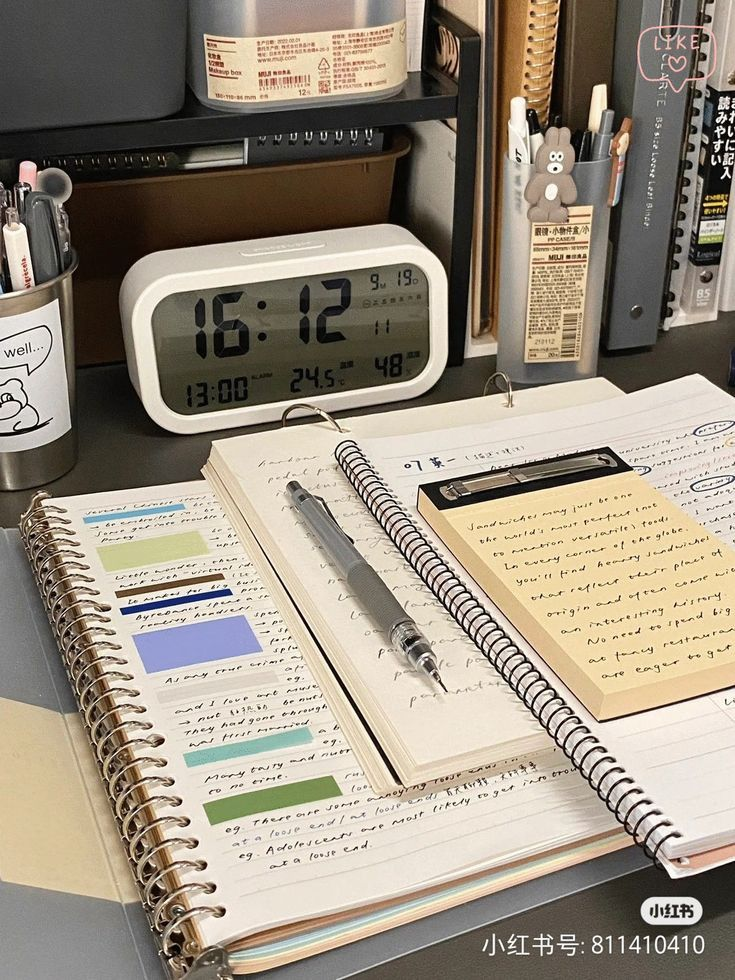

La productividad es la capacidad de completar tareas de manera eficiente y efectiva. En el contexto del estudio, ser productivo significa gestionar bien tu tiempo, evitar distracciones y lograr tus objetivos educativos con mayor facilidad.
Mejorar tu productividad requiere tiempo, esfuerzo y práctica, pero los beneficios a largo plazo valen la pena. Al implementar consejos y herramientas efectivas, puedes optimizar tu tiempo, aumentar tu rendimiento y alcanzar tus metas con mayor facilidad. ¡Empieza a mejorar tu productividad hoy mismo y descubre todo lo que puedes lograr!
